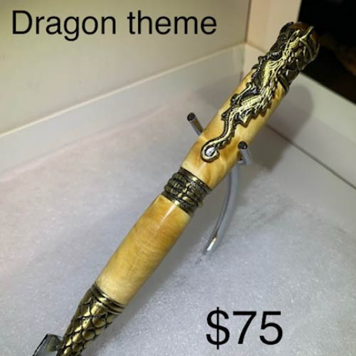
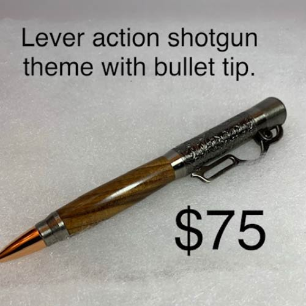
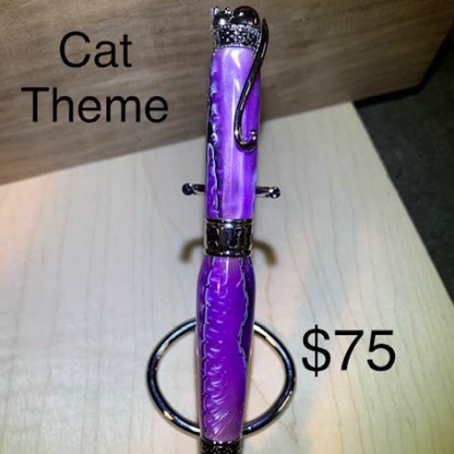
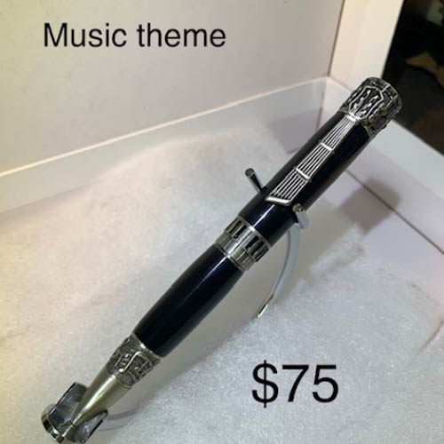

Snider's Woodshop
Products
Catalog
Pen Projects
Brass Dragon Pen
This pen is a antique brass dragon themed pen made with blinda maple burl barrels. Notice the dragon scales on the writing nib, claw on the mid band and the unique dragon pen clip with jewel on the top. Also available in antique pewter silver.
Start Your Custom ProjectLever Action Shotgun Pen
This pen is a favourite of all the hunters out there. This lever action pays homage to early hunting rifles. The scribing in the upper barrel really adds some character and when matched to the dark maple “stock” of the lower barrel. The nib is fashioned as a bullet tip and really completes the look of the pen. Comes with an optional mini rifle case pen case.
Start Your Custom ProjectPurple Cat Pen
This pen is a cat themed pen complete with sleeping cat topper, cat tail clip, and cute paw prints on the center band and nib. This one is done in chrome and the barrels are purple acrylic.
Start Your Custom ProjectMusic Pen
This music theme pen is sure to “drum” up some interesting conversations. Made with pewter silver the top is a drum, has a guitar fret board pen clip, a piano key centre band and music note nib. Barrels are piano black acrylic.
Start Your Custom Project